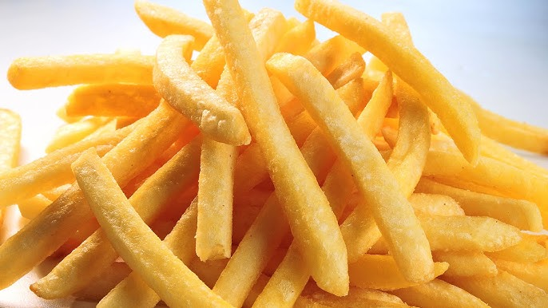

French Fries
Home

Description
A simple recipe on how to make fried potatoes
Ingridients
- 1 cup of vegetable oil
- 2 pounds of peeled potatoes
- 1 teaspoon of salt
Steps
- Slice potatoes into French fries and place them into a large bowl of cold water to prevent them from turning brown.
- Heat oil in a heavy saucepan or large skillet to 350 degrees F
- Lower fries carefully into the hot oil in batches to prevent them from clumping together. Fry until golden brown and crispy on all sides, about 7 to 10 minutes.
- Drain fries on a paper towel-lined plate.
- Add the salt